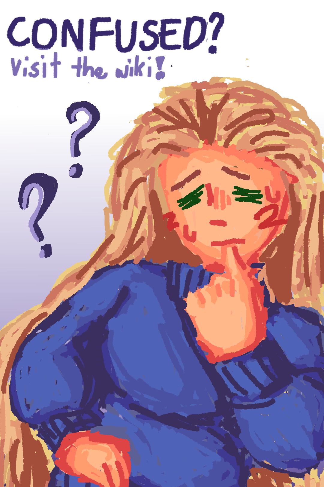
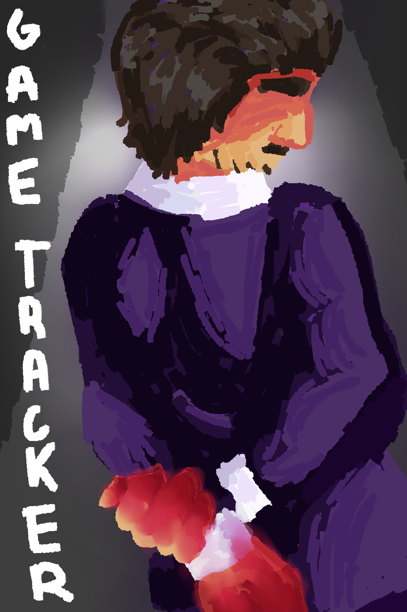
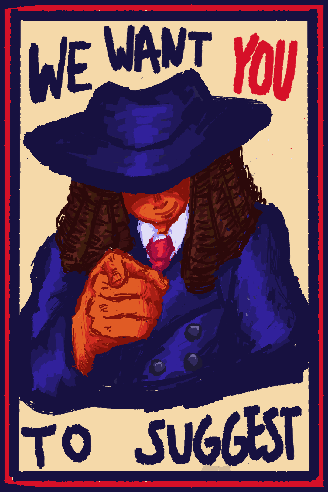

Clif's expansion of the classic social deduction game 'mafia'
"Speak wisely, Act carefully, Trust rarely"



FREQUENTLY ASKED QUESTIONS
✦ What is M4FIA?
M4FIA is an expansion and a reinterpretation of the classic social deduction game Mafia, Werewolf, Village, and/or similar social deduction games.
M4FIA builds on the gameplay of these while introducing new roles, mechanics, and a third faction for even more fun.
✦ What is this website for?
This website contains all the relevant information and resources for M4FIA.
You can view the lore, rules, and roles through the Wiki, submit ideas and suggestions through the Suggestions page, and use the Game Tracker to help hosts manage games and help players keep track of important information during a game.
✦ How do you play?
M4FIA is a social deduction game where players are secretly assigned roles and factions. During the day, players discuss information and vote who they think is the 'enemy'. During the night, players use their abilities in secret. Players must work towards their faction's objective or individual win condition while dealing with opposing players.
M4FIA builds on the familiar gameplay of Mafia, Werewold, Village, and/or similar games while adding its own roles, mechanics, and faction.
✦ How many players can play?
M4FIA can be played with 4+ players, but the recommended player count is 6 or more, excluding the Host.
The Host is responsible for running and managing the game through its phases and events. The Game Tracker can be used to make managing the game a lighter task
✦ Can I make suggestions?
Yes!
You can visit the Suggestions page to submit ideas for M4FIA or the website. Suggestions can include new roles, mechanics, features, improvements, or other ideas you think would make the game or website better. These can be submitted anonymously if you prefer!
The suggestions page can also be used to report bugs.